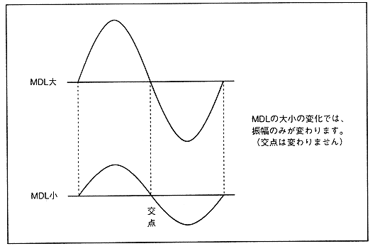

Figure 4.38 MDL modulation depth

Explains the degree of modulation by the “MDL” setting value. Table 4.15 shows that the modulation factor becomes ± nπ depending on the set value of “MDL”.
∙ Each sound slot data input to modulation input X and Y is averaged by the averaging calculator. If the data input to X is XD, the data input to Y is YD, and the output of the averaging operation unit is ZD, it can be expressed as the following equation.
ZD = (XD + YD) / 2
こ の This ZD is subjected to level adjustment by "MDL" and sent to the slot address pointer (phase adder).